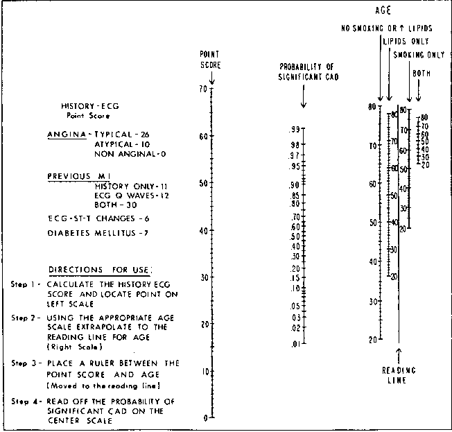
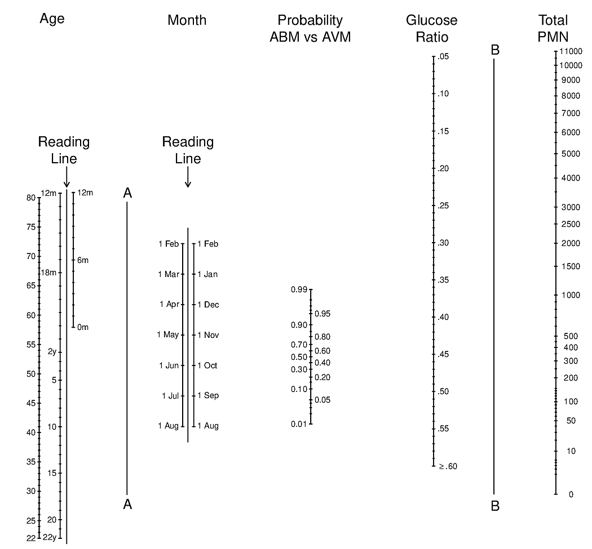
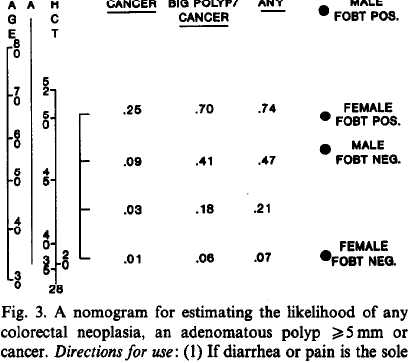
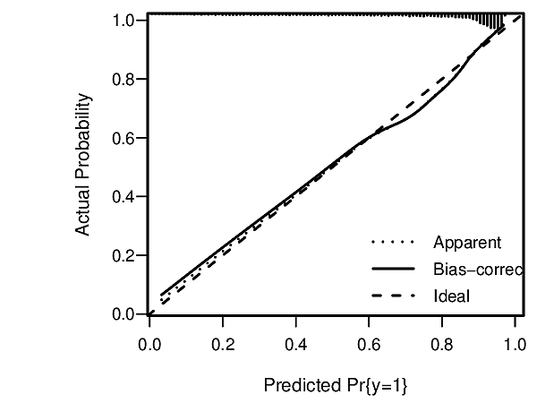
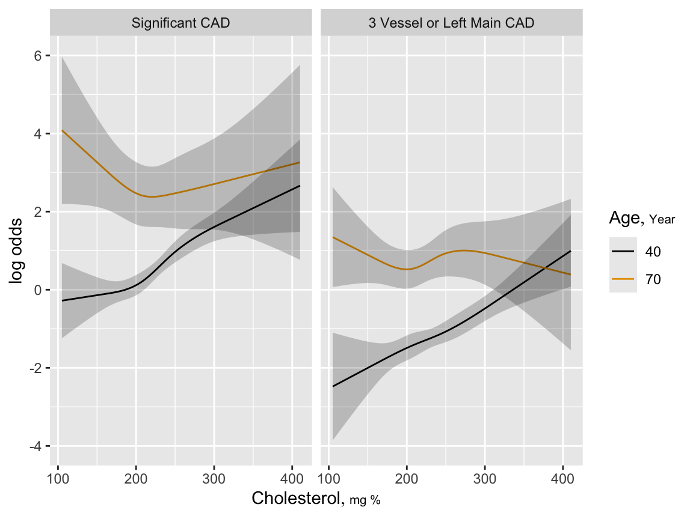
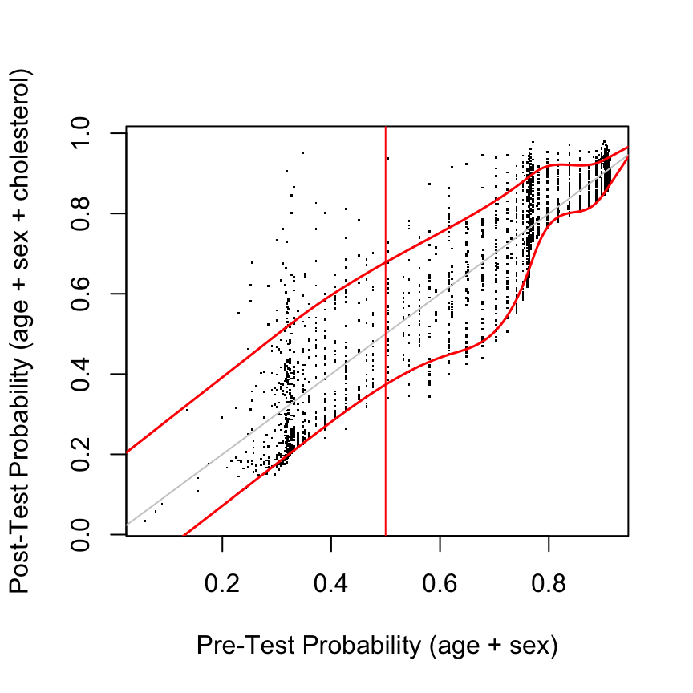

19 Diagnosis
Sensitivity and specificity are far less useful than they seem, and they are properties not just of tests but of patients also. Probabilistic diagnosis is better developed through logistic regression models, which handle pre-test probabilities, tests with non-binary or multiple outputs, multiple correlated tests, and multiple disease stages/severities (using ordinal logistic regression).
Medical diagnostic research, as usually practiced, is prone to bias and even more importantly to yielding information that is not useful to patients or physicians and sometimes overstates the value of diagnostic tests. Important sources of these problems are conditioning on the wrong statistical information, reversing the flow of time, and categorization of inherently continuous test outputs and disease severity. It will be shown that sensitivity and specificity are not properties of tests in the usual sense of the word, and that they were never natural choices for describing test performance. This implies that ROC curves are unhelpful (although areas under them are sometimes useful). So is categorical thinking.
This chapter outlines the many advantages of diagnostic risk modeling, showing how pre-and post-test diagnostic models give rise to clinically useful displays of pre-test vs. post-test probabilities that themselves quantify diagnostic utility in a way that is useful to patients, physicians, and diagnostic device makers. And unlike sensitivity and specificity, post-test probabilities are immune to certain biases, including workup bias.
Case-control studies use a design where sampling is done on final disease status and patient exposures are “along for the ride.” In other words, one conditions on the outcome and considers the distribution of exposures using outcome-dependent sampling. Sensitivity and specificity are useful for proof-of-concept case-control studies because sensitivity and specificity also condition on the final diagnosis. The use of sensitivity and specificity in prospective cohort studies is the mathematical equivalent of making three left turns in order to turn right. Like the complex adjustments needed for \(P\)-values when doing sequential trials, sensitivity and specificity require complex adjustments for workup bias just because of their backward consideration of time and information. In a cohort study one can use a vanilla regression model to estimate the probability of a final diagnostic outcome given patient characteristics and diagnostic test results.
19.1 Problems with Traditional Indexes of Diagnostic Utility
sensitivity = Prob\([T^{+} | D^{+}]\)
specificity = Prob\([T^{-} | D^{-}]\)
Prob\([D^{+} | T^{+}] = \frac{\mathrm{sens} \times \mathrm{prev}}{\mathrm{sens} \times \mathrm{prev} + (1-\mathrm{spec})\times (1-\mathrm{prev})}\)
Problems:
- Diagnosis forced to be binary
- Test force to be binary
- Sensitivity and specificity are in backwards time order
- Confuse decision making for groups vs. individuals
- Inadequate utilization of pre-test information
- Dichotomization of continuous variables in general
Example: BI-RADS Score in Mammography
Does Category 4 Make Any Sense?
Breast Imaging Reporting and Data System, American College of Radiologists breastcancer.about.com/od/diagnosis/a/birads.htm. American College of Radiology. BI-RADS US (PDF document) Copyright 2004. BI-RADS US. arc.org.
| Diagnosis | Number of Criteria | |
|---|---|---|
| 0 | Incomplete | Your mammogram or ultrasound didn’t give the radiologist enough information to make a clear diagnosis; follow-up imaging is necessary |
| 1 | Negative | There is nothing to comment on; routine screening recommended |
| 2 | Benign | A definite benign finding; routine screening recommended |
| 3 | Probably Benign | Findings that have a high probability of being benign (\(>98\)%); six-month short interval follow-up |
| 4 | Suspicious Abnormality | Not characteristic of breast cancer, but reasonable probability of being malignant (3 to 94%); biopsy should be considered |
| 5 | Highly Suspicious of Malignancy | Lesion that has a high probability of being malignant (\(\geq 95\)%); take appropriate action |
| 6 | Known Biopsy Proven Malignancy | Lesions known to be malignant that are being imaged prior to definitive treatment; assure that treatment is completed |
How to Reduce False Positives and Negatives?
- Do away with “positive” and “negative”
- Provide risk estimates
- Defer decision to decision maker
- Risks have self-contained error rates
- Risk of 0.2 \(\rightarrow\) Prob[error]=.2 if don’t treat
- Risk of 0.8 \(\rightarrow\) Prob[error]=.2 if treat
See this for a nice article on the subject.
Binary Diagnosis is Problematic Anyway
The act of diagnosis requires that patients be placed in a binary category of either having or not having a certain disease. Accordingly, the diseases of particular concern for industrialized countries—such as type 2 diabetes, obesity, or depression—require that a somewhat arbitrary cut-point be chosen on a continuous scale of measurement (for example, a fasting glucose level \(>6.9\) mmol/L [\(>125\) mg/dL] for type 2 diabetes). These cut-points do not adequately reflect disease biology, may inappropriately treat patients on either side of the cut-point as 2 homogeneous risk groups, fail to incorporate other risk factors, and are invariable to patient preference.
— Vickers et al. (2008)
Newman & Kohn (2009) have a strong section about the problems with considering diagnosis to be binary.
Back to Sensitivity and Specificity
- Backwards time order
- Irrelevant to both physician and patient
- Improper discontinuous scoring rules1
- Are not test characteristics
- Are characteristics of the test and patients
- Not constant; vary with patient characteristics
- Sensitivity \(\uparrow\) with any covariate related to disease severity if diagnosis is dichotomized
- Require adjustment for workup bias
- Diagnostic risk models do not; only suffer from under-representation
- Good for proof of concept of a diagnostic method in a case–control study; not useful for utility
1 They are optimized by not correctly estimating risk of disease.
Hlatky et al. (1984); Moons et al. (1997); Moons & Harrell (2003); Gneiting & Raftery (2007)
Sensitivity of Exercise ECG for Diagnosing CAD
| Age | Sensitivity |
|---|---|
| \(<40\) | 0.56 |
| 40–49 | 0.65 |
| 50–59 | 0.74 |
| \(\geq\) 60 | 0.84 |
| Sex | |
|---|---|
| male | 0.72 |
| female | 0.57 |
| # Diseased Coronary Arteries | |
|---|---|
| 1 | 0.48 |
| 2 | 0.68 |
| 3 | 0.85 |
Hlatky et al. (1984) ; See also Janssens 2005
19.2 Problems with ROC Curves and Cutoffs
… statistics such as the AUC are not especially relevant to someone who must make a decision about a particular \(x_{c}\). … ROC curves lack or obscure several quantities that are necessary for evaluating the operational effectiveness of diagnostic tests. … ROC curves were first used to check how radio receivers (like radar receivers) operated over a range of frequencies. … This is not how most ROC curves are used now, particularly in medicine. The receiver of a diagnostic measurement … wants to make a decision based on some \(x_{c}\), and is not especially interested in how well he would have done had he used some different cutoff.
— Briggs & Zaretzki (2008)
In the discussion to this paper, David Hand states “when integrating to yield the overall AUC measure, it is necessary to decide what weight to give each value in the integration. The AUC implicitly does this using a weighting derived empirically from the data. This is nonsensical. The relative importance of misclassifying a case as a non-case, compared to the reverse, cannot come from the data itself. It must come externally, from considerations of the severity one attaches to the different kinds of misclassifications.”
19.3 Optimum Individual Decision Making and Forward Risk
- Minimize expected loss/cost/disutility
- Uses
- utility function (e.g., inverse of cost of missing a diagnosis, cost of over-treatment if disease is absent)
- probability of disease
\(d =\) decision, \(o =\) outcome
Utility for outcome \(o = U(o)\)
Expected utility of decision \(d = U(d) = \int p(o | d) U(o)do\)
\(d_\mathrm{opt} = d\) maximizing \(U(d)\)
The steps for determining the optimum decision are:
- Predict the outcome \(o\) for every decision \(d\)
- Assign a utility \(U(o)\) to every outcome \(o\)
- Find the decision \(d\) that maximizes the expected utility
See
- https:bit.ly/datamethods-dm
- en.wikipedia.org/wiki/Optimal_decision
- www.statsathome.com/2017/10/12/bayesian-decision-theory-made-ridiculously-simple
- Govers et al. (2018)
- stats.stackexchange.com/questions/368949
See this NY Times article about decision theory.
19.4 Diagnostic Risk Modeling
Assuming (Atypical) Binary Disease Status
| Y | 1:diseased, 0:normal |
|---|---|
| \(X\) | vector of subject characteristics (e.g., demographics, risk factors, symptoms) |
| \(T\) | vector of test (biomarker, …) outputs |
| \(\alpha\) | intercept |
| \(\beta\) | vector of coefficients of \(X\) |
| \(\gamma\) | vector of coefficients of \(T\) |
pre\((X)\) = Prob\([Y=1 | X] = \frac{1}{1 + \exp[-(\alpha^{*} + \beta^{*} X)]}\)
post\((X,T)\) = Prob\([Y=1 | X,T] = \frac{1}{1 + \exp[-(\alpha + \beta X + \gamma T)]}\)
Note: Proportional odds model extends to ordinal disease severity \(Y\).
19.4.1 Example Diagnostic Models
Code
knitr::include_graphics('images/cad-nomo.png')
Code
knitr::include_graphics('images/abm-nomo.png')
Code
knitr::include_graphics('images/bra91usiNomogram.png')
19.5 Assessing Diagnostic Yield
19.5.1 Absolute Yield
Pencina et al. (2008): Absolute incremental information in a new set of markers
Consider change in predicted risk when add new variables:
Average increase in risk of disease when disease present
+
Average decrease in risk of disease when disease absent
Formal Test of Added Absolute and Relative Information
Likelihood ratio \(\chi^{2}\) test of partial association of new markers, adjusted for old markers
19.5.2 Assessing Relative Diagnostic Yield
- Variation in relative log odds of disease = \(T \hat{\gamma}\), holding \(X\) constant
- Summarize with Gini’s mean difference or inter-quartile range, then anti-log
- E.g.: the typical modification of pre-test odds of disease is by a factor of 3.4
Gini’s mean difference = mean absolute difference between any pair of values
See Figure 13.6 for a graphical depiction of the relationship between odds ratio and absolute risk difference.
19.6 Assessing Absolute Diagnostic Yield: Cohort Study
- Patient \(i = 1, 2, 3, \ldots, n\)
- In-sample sufficient statistics: pre\((X_{1})\), …, pre\((X_{n})\), post\((X_{1}, T_{1})\), …, post\((X_{n}, T_{n})\)
Code
knitr::include_graphics('images/hla09criFig3.png')Assessments assume that risk estimates are well calibrated, using, for example a high-resolution continuous calibration curve.

Out-of-sample assessment: compute pre\((X)\) and post\((X,T)\) for any \(X\) and \(T\) of interest
Summary measures
- quantile regression (Koenker & Bassett (1978)) curves as a function of pre
- overall mean \(|\)post – pre\(|\)
- quantiles of post – pre
- du\(_{50}\): distribution of post when pre = 0.5
diagnostic utility at maximum pre-test uncertainty- Choose \(X\) so that pre = 0.5
- Examine distribution of post at this pre
- Summarize with quantiles, Gini’s mean difference on prob. scale
- Special case where test is binary (atypical): compute post for \(T^{+}\) and for \(T^{-}\)
19.7 Assessing Diagnostic Yield: Case-Control & Other Oversampling Designs
- Intercept \(\alpha\) is meaningless
- Choose \(X\) and solve for \(\alpha\) so that pre = 0.5
- Proceed as above to estimate du\(_{50}\)
19.8 Example: Diagnosis of Coronary Artery Disease (CAD)
Test = Total Cholesterol
Code
require(rms)
getHdata(acath)
acath <- subset(acath, !is.na(choleste))
dd <- datadist(acath); options(datadist='dd')
f <- lrm(sigdz ~ rcs(age,5)*sex, data=acath)
pre <- predict(f, type='fitted')
g <- lrm(sigdz ~ rcs(age,4)*sex + rcs(choleste,4) + rcs(age,4) %ia%
rcs(choleste,4), data=acath)
ageg <- c(40, 70)
psig <- Predict(g, choleste, age=ageg)
s <- lrm(tvdlm ~ rcs(age,4)*sex + rcs(choleste,4) + rcs(age,4) %ia%
rcs(choleste,4), data=acath)
psev <- Predict(s, choleste, age=ageg)
ggplot(rbind('Significant CAD'=psig, '3 Vessel or Left Main CAD'=psev),
adj.subtitle=FALSE)
Code
post <- predict(g, type='fitted')
plot(pre, post, xlab='Pre-Test Probability (age + sex)',
ylab='Post-Test Probability (age + sex + cholesterol)', pch=46)
abline(a=0, b=1, col=gray(.8))
lo <- Rq(post ~ rcs(pre, 7), tau=0.1) # 0.1 quantile
hi <- Rq(post ~ rcs(pre, 7), tau=0.9) # 0.9 quantile
at <- seq(0, 1, length=200)
lines(at, Predict(lo, pre=at)$yhat, col='red', lwd=1.5)
lines(at, Predict(hi, pre=at)$yhat, col='red', lwd=1.5)
abline(v=.5, col='red')
19.9 Summary
Diagnostic utility needs to be estimated using measures of relevance to individual decision makers. Improper accuracy scoring rules lead to sub-optimal decisions. Traditional risk modeling is a powerful tool in this setting. Cohort studies are ideal but useful measures can be obtained even with oversampling. Avoid categorization of any continuous or ordinal variables.
Notes
Much of this material is from “Direct Measures of Diagnostic Utility Based on Diagnostic Risk Models” by FE Harrell presented at the FDA Public Workshop on Study Methodology for Diagnostics in the Postmarket Setting, 2011-05-12.